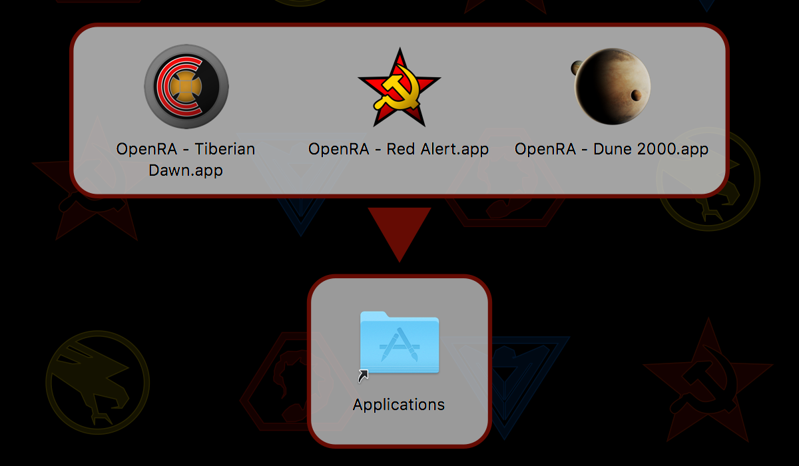
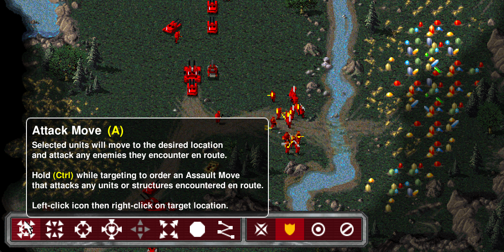
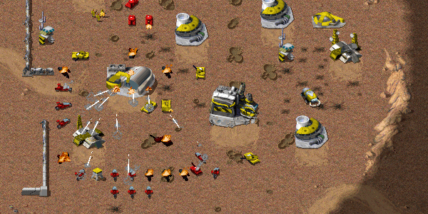

After three months of public playtesting we are pleased to finally declare “Mission Accomplished” on the new OpenRA release! Release 20171014 makes some fundamental changes to the way that the OpenRA game engine works, plus a few similarly important gameplay changes to the default mods.
The first big change will be visible as soon as you go to launch your favourite mod. The in game mod chooser has been removed, and mods are now launched directly from your operating system. This is part of a much larger set of changes to the game engine to support multiple OpenRA installations and the new Mod SDK.
The mod chooser screen has been replaced by separate launchers for each mod.
The next big change is the new command bar at the bottom of the screen. This new UI improves discoverability for several advanced unit commands and served as a focus for several gameplay changes related to unit stances and the Attack Move command – read through the in game button tooltips to find out more!
A new bottom command bar is now available for issuing common orders and changing unit stances.
The final group of big changes is less obvious, but just as important: the way that buildings are targeted and take damage has been reworked (taking inspiration from the original Dune 2000) to account for the size of the building footprint. This has a range of balance implications, for example Tanya and Commandos no longer need to run to the center of buildings to demolish them.
Other great new features in this release include:
See the full changelog for more details, or go directly to our download page to try them out for yourself.
New building physics improves the way that structures are targeted and take damage.
Supporting the C&C modding community has always been an important goal for OpenRA, and this release takes a big, but disruptive, step forward in this area. Back in April we announced the planned mod chooser removal, and in July we released the first version of the OpenRA Mod SDK that replaces it. From now on, all mods should be built using the SDK, which makes it easy for you to build your own stand-alone installers that do not rely on a base OpenRA installation. See the SDK getting started wiki page for more details!
Other improvements for modders include further adoption of trait conditions, improved error checks and logging, and a collection of new and improved game logic for energy walls, tunnels, and subterranean units.
It has been a long road to this release, and we hope you enjoy it!